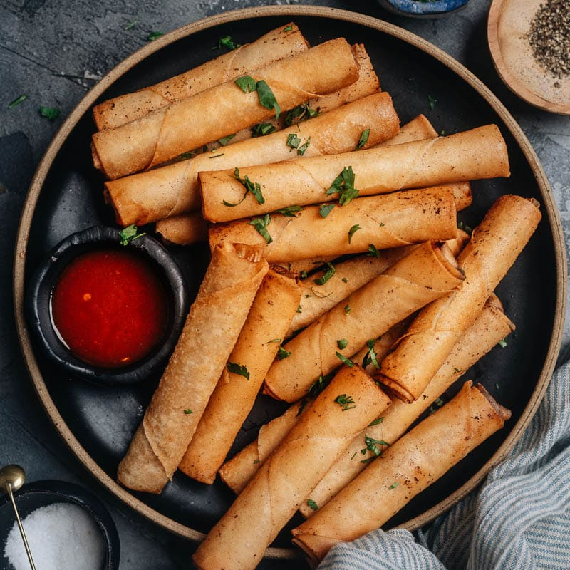

Lumpiang Shanghai Recipes

One of the Most Popular food in the Philippines
Lumpiang Shanghia
Lumpia or Lumpiang Shanghai is a type of Filipino egg roll. The basic filling is composed of ground pork along with minced onions, carrots, and seasonings such as salt and ground black pepper. This recipe post is all about how to make basic lumpia. Feel free to use this as a baseline.
Ingredients
- 1 pound ground pork
- 1 pound ground beef
- 1 medium onion, finely chopped
- 1 carrot, grated
- ¼ cup soy sauce
- 2 ½ teaspoons black pepper
- 1 ½ tablespoons garlic powder
- 2 tablespoons salt
- 1 (16 ounce) package spring roll wrappers
- 1 ½ quarts oil for frying
Directions
- In a Large bowl, combine ground pork, ground beef, onion, and carrot. Make sure to completely mix everything. I suggest getting down and dirty and use your hands. Knead the meat in the bowl if you must. Gradually blend in the soy sauce , black pepper, garlic powder, and salt until all ingredients are evenly distributed.
- Lay out a few wrappers at a time on a flat surface, and place about 2 tablespoons of the filling in a line down the center of the wrapper. Make sure the filling is no thicker than your thumb, or the wrapper will cook faster than the meat. Take the bottom and top edges of the wrapper and fold them towards the center. Take the left and right sides, and fold them towards the center. Moisten the last edge of the wrapper to seal. Now repeat using the rest of the wrappers, and have hubby or the kids help you out.
- Heat the oil in a deep-fryer or heavy skillet to 375 degrees F (190 degrees C). Fry 3 or 4 lumpia at a time. Fry for about 3 or 4 minutes, turning once. Lumpia are cooked through when they float, and the wrapper is golden brown. Cut in half, or serve as is with dipping sauce. We like sweet and sour sauce, soy sauce with lemon, or banana ketchup.
Back to Main